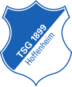

Kramarics größter Durchhänger: Nur 68 Minuten in sechs Pflichtspielen
Andrej Kramaric erlebt den schwächsten Saisonstart seiner Hoffenheim-Karriere. In den bisherigen sechs Pflichtspielen kam der 35-Jährige lediglich 68 Minuten zum Einsatz. Kein einziges Mal stand er in der Startelf.
Der Hintergrund ist zweigeteilt: Kramaric bestritt bei der WM vier Partien, kam dabei stets von der Bank. Fünf Tage nach dem Aus im Sechzehntelfinale gegen Portugal ließ er sich an der Leiste operieren und stieg dadurch verspätet ins Hoffenheimer Training ein. Zudem hat sich der Kader durch die Europa-League-Teilnahme deutlich verbreitert. Die TSG gab zwar Bazoumana Toure für rund 50 Millionen Euro an Newcastle United ab und Grischa Prömel ablösefrei an den VfB Stuttgart, investierte aber 66 Millionen Euro in sechs Neuzugänge. Rückkehrer Bambase Conte und der aus Salzburg geholte Adam Daghim haben auf den Flügeln die Nase vorn. Im Sturm konkurriert Kramaric mit Adam Hlozek, Tim Lemperle, Max Moerstedt und Fisnik Asllani.
Eine vergleichbare Phase durchlebte Kramaric zuletzt in der Hinrunde 2017/18 unter Julian Nagelsmann, als er ebenfalls fünfmal in Serie auf der Bank saß. Im Vorjahr war er noch 28-mal Stammspieler und erzielte 15 Tore sowie acht Vorlagen in 36 Partien. Als Rekordtorschütze der TSG steht er bei 158 Treffern in 366 Spielen seit seinem Wechsel 2016 in den Kraichgau.
Trainer Christian Ilzer lobte Kramaric im Dezember, als dieser sein 300. Bundesligaspiel gegen den HSV absolvierte, als "Top-Profi, der unermüdlich an seinen Fähigkeiten im Detail arbeitet" und als "extremen Winner-Typ". Ilzers Kollege bei der Nationalmannschaft, Slaven Bilic, ließ Kramaric beim 2:1-Auswärtssieg in Tschechien allerdings ebenfalls 90 Minuten auf der Bank. Hoffenheim verlängerte den Vertrag mit Kramaric erst Anfang Mai bis 2028.
Für eine baldige Rückkehr in die Startelf spricht die Chancenverwertung der TSG: Trotz sieben Ligatore in vier Spielen liegt Hoffenheim dabei auf dem fünftletzten Platz.